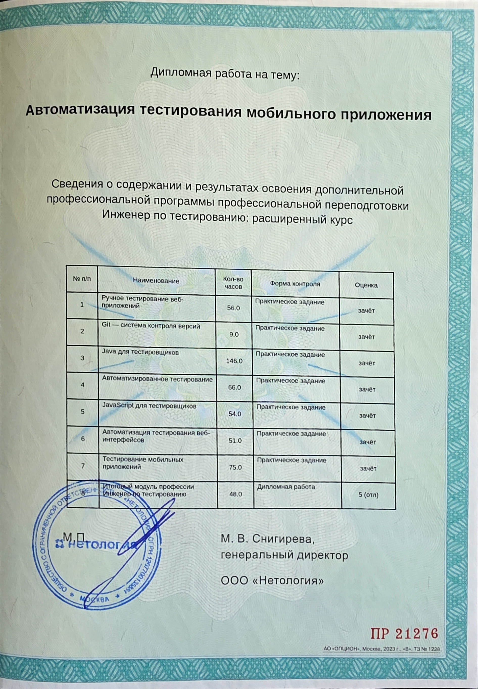

Обо мне
Я — начинающий QA-инженер, прошедший обучение в онлайн-школе «Нетология» по направлению «Инженер по тестированию». Моя программа обучения охватывала все ключевые аспекты контроля качества: от ручного тестирования и тест-дизайна до автоматизации на Java и JavaScript, тестирования веб-интерфейсов, мобильных приложений, производительности и безопасности.
В ходе обучения я осваивала методологии и виды тестирования, техники тест-дизайна, создание тестовой документации (чек-листы, тест-кейсы, баг-репорты в Jira), а также инструменты для работы с документацией. Также изучала клиент-серверное взаимодействие, особенности тестирования веб-приложений, работу с Chrome DevTools, Charles Proxy и другими инструментами.
В области автоматизации тестирования я использовала Java (JUnit5, Selenide, REST Assured, Mockito, Maven, Gradle) и JavaScript (Playwright, Cypress, Jest, Puppeteer). Настраивала CI/CD через GitHub Actions с формированием отчетов в Allure и Report Portal. Имею опыт работы с Docker, SQL (PostgreSQL), а также тестированием API (Postman, REST Assured).
Отдельное внимание уделила мобильному тестированию: ручное тестирование iOS и Android приложений, работа с Xcode, Android Studio, ADB, эмуляторами и симуляторами. Освоила автоматизацию мобильных приложений с использованием Appium, UIAutomator, XCTest и Espresso.
Изучала тестированию производительности (JMeter) и безопасности веб-приложений (инъекции, авторизация, сессии, куки, сетевая безопасность). В работе активно использовались современные AI-инструменты (ChatGPT, Claude, GitHub Copilot) для оптимизации процессов тестирования, генерации тест-кейсов и анализа кода.
Владею английским языком на уровне, достаточном для чтения технической литературы и документации (в процессе изучения). Нахожусь в постоянном поиске новых знаний и с интересом берусь за сложные задачи, чтобы расти как специалист. Готова к обучению и развитию в сфере QA и других направлениях IT.
По образованию я — хормейстер, что развило во мне музыкальный слух, чувство ритма и умение работать в команде. Эти навыки помогают мне находить нестандартные подходы к решению задач и эффективно взаимодействовать с коллегами.
Языки и технологии
Автоматизация
QA и тестирование
Мои дипломы

Диплом (страница 1)
Первая страница диплома об окончании обучения по направлению «Инженер по тестированию».

Диплом (страница 2)
Вторая страница диплома с перечнем изученных дисциплин и модулей.

Диплом (детали)
Увеличенная страница с подробным перечнем пройденных курсов и полученных оценок.
{kind=link}
Мои проекты
Автотесты для интернет-магазина
UI + API тестирование интернет-магазина. Реализованы позитивные и негативные сценарии: корзина, фильтрация, форма заказа. Настроен CI через GitHub Actions с отчетом Allure.
Смотреть на GitHubТестирование мобильного приложения
Ручное тестирование Android/iOS приложения (чек-листы, баг-репорты). Настройка сниффинга через Charles Proxy. Написаны автотесты на Appium и Espresso.
Смотреть на GitHubНагрузочное тестирование API
Создание сценариев нагрузочного тестирования, анализ производительности под нагрузкой, составление отчета с рекомендациями по оптимизации.
Смотреть на GitHubМои сертификаты
Git — система контроля версий
Подтверждает мои знания в работе с системой контроля версий Git, включая branching, merging и работу с удаленными репозиториями.
Ручное тестирование веб-приложений
Сертификат, подтверждающий знания основ ручного тестирования программного обеспечения, методологий и процессов обеспечения качества, тестовой документации.
Java для тестировщиков
Подтверждает мои знания языка программирования Java для тестировщиков, включая ООП, коллекции, исключения и основы написания автотестов.
JavaScript для тестировщиков
Сертификат, подтверждающий знание JavaScript для написания тестов, работы с DOM-элементами и автоматизации веб-приложений.
Автоматизация тестирования веб-интерфейсов
Курс по автоматизированному тестированию веб-интерфейсов с использованием современных инструментов и практик.
Автоматизированное тестирование
Сертификат, подтверждающий знания в области автоматизации тестирования, включая создание автотестов, работу с фреймворками и инструментами автоматизации.
Тестирование производительности
Курс по нагрузочному тестированию, анализу узких мест и оптимизации производительности приложений.
Тестирование мобильных приложений
Сертификат тестирования мобильных приложений (iOS/Android), включая эмуляторы, реальные устройства и чек-листы.
Тестирование безопасности
Курс по основам безопасности веб-приложений, поиску уязвимостей и методам защиты.
Образование и гибкие навыки
Образование
Гибкие навыки
Хобби и увлечения
Спорт и фитнес
Активно занимаюсь спортом, люблю бег и фитнес (силовой тренинг). Спорт помогает поддерживать энергию, дисциплину и концентрацию — качества, важные в работе QA-инженера.
Изготовление украшений
Создаю украшения из натуральных камней. Это кропотливое и творческое занятие развивает внимание к деталям, усидчивость и чувство прекрасного.
Вышивка и рукоделие
Вышиваю в свободное время. Это занятие тренирует терпение, аккуратность и умение доводить начатое до конца — навыки, которые пригождаются при написании автотестов.
Семья
Я — мама маленькой девочки. Семья вдохновляет меня на развитие и достижение новых целей, а родительский опыт учит терпению, гибкости и умению находить подход к разным людям.
Вокал и музыка
Пою и продолжаю развивать свои музыкальные навыки. Музыка помогает снимать стресс, вдохновляет и дает творческую энергию для решения сложных задач.